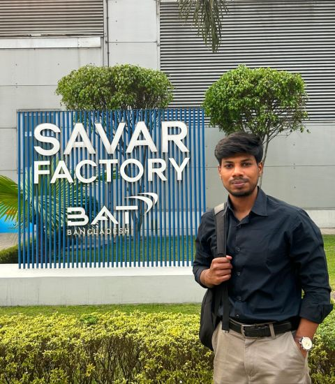
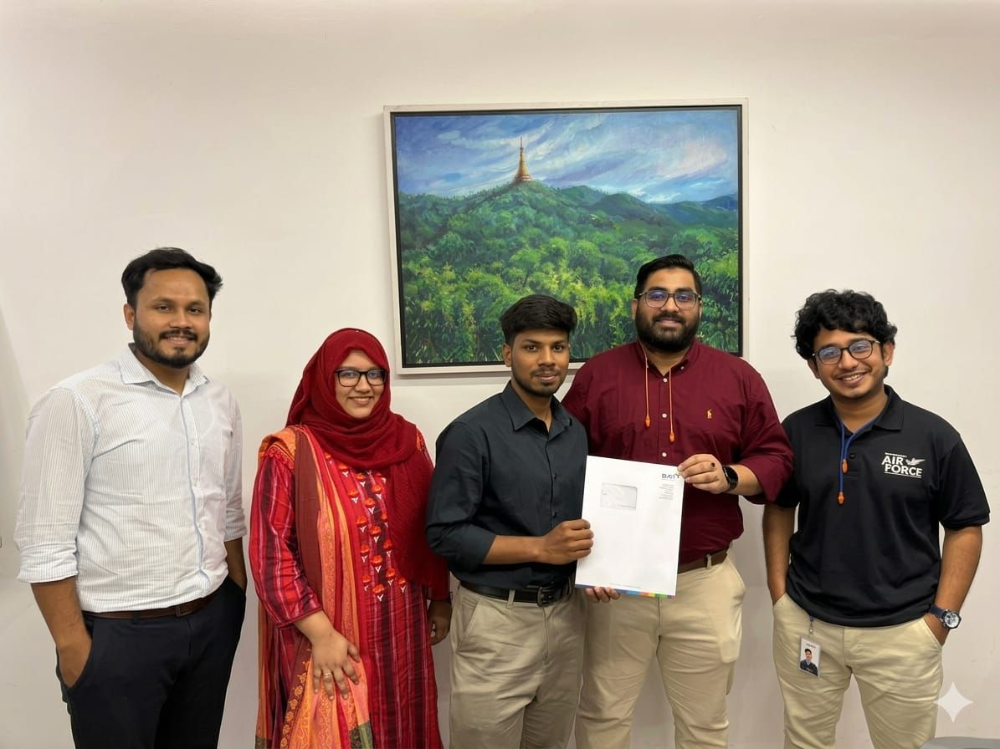

Engineering Systems.
Optimizing Operations.
Hi, I'm Riasad Rahman Rakib, a final-year B.Sc. student in Industrial & Production Engineering at Rajshahi University of Engineering & Technology (RUET). My interests lie at the intersection of industrial engineering, operations research, supply chain analytics, and applied artificial intelligence. I enjoy developing data-driven solutions to complex engineering and operational problems.
Riasad Rahman Rakib
RUET · Department of IPE
Connecting Industrial Engineering with Data & Technology
I am interested in understanding how complex industrial and supply chain systems work, identifying their inefficiencies, and developing practical solutions through engineering analysis, mathematical optimization, and intelligent technologies.
Industrial Engineering
Manufacturing systems analysis, Value Stream Mapping, process improvement, capacity analysis, and productivity measurement.
Supply Chain & Logistics
Supply chain network design, logistics optimization, vehicle routing, sustainable operations, and disruption resilience.
Operations Research
Mixed-Integer Linear Programming, mathematical modeling, Gurobi optimization, clustering, and data-driven decision-making.
Data Science & Applied AI
Machine learning, deep learning, computer vision, large language models, and Retrieval-Augmented Generation systems.
Core Skills
A balanced toolkit combining analytical engineering tools, technical programming, and professional execution capabilities.
💻 Technical Skills
🤝 Professional & Soft Skills
Research Activities & Case Studies
My research interests include sustainable supply chain design, logistics optimization, operational resilience, and mathematical modeling of industrial and urban systems.
Integrating AHP and Bayesian BWM: A Dual-Phase MCDM Framework
Presented research paper at ICMEAS 2025, organized by MIST, Dhaka. The paper introduces a dual-phase approach combining AHP and Bayesian Best-Worst Method to address key challenges in lean manufacturing systems.
A Two-Stage Clustered MILP Framework for Efficient and Resilient Waste Collection Routing
Developed a framework combining K-Means clustering and Mixed-Integer Linear Programming to improve municipal solid waste collection routing in Rajshahi City Corporation, indicating operational cost savings of 10.76%–17.52%.
Resilient and Sustainable Supply Chain Network Design for the RMG Sector
Exploring a multi-objective optimization framework for Bangladesh's Ready-Made Garment supply chain focusing on network design under operational disruptions and sustainability metrics.
Engineering Competitions & Case Studies
Demonstrating practical problem-solving, Lean methodologies, and data-driven optimization in competitive environments.
Engineering Applications & AI Projects
A selection of projects combining industrial applications, machine learning, intelligent automation, and embedded systems.
 Computer Vision · Industrial Safety
Computer Vision · Industrial Safety
AI-Based PPE Detection System
Developed a computer vision-based workplace safety monitoring system using YOLO object detection, integrated with Raspberry Pi hardware indicators for real-time safety alerts.
AI Dury — Football Image-to-Commentary
An experimental system that analyzes football match images using YOLOv8n and generates contextual match commentary with Gemini 2.0 Flash.
 Embedded Systems · Automation
Embedded Systems · Automation
Automatic Baby Cradle Prototype
Designed an automation prototype integrating sound-based cry detection, moisture sensing, and a motor-driven swinging mechanism to demonstrate sensor-based response and control.
AI Job Discovery & Matching Agent
An ongoing AI agent project that collects job alerts through Gmail API, extracts vacancy information, evaluates relevance against user-defined preferences, and organizes results in a Streamlit dashboard.
Krishok Bondhu — Rice Disease Assistant
A bilingual agricultural decision-support application that uses a deep learning image classifier and Gemini-powered guidance to help users identify rice leaf diseases and explore possible next steps.
Advanced Machining Knowledge Assistant
Built a Retrieval-Augmented Generation system using LangChain, FAISS, and Gemini to retrieve relevant information from advanced machining literature and support technical question answering.
Achievements & Certifications
Recognition for project development, teamwork, and professional learning.
🏆 4th Place — Orbeetal Idea Contest 2026
Achieved 4th place with the AI-Based PPE Detection System at the Orbeetal Idea Contest, held during the 11th RCF Career Fair at RUET.
📜 Six Sigma Green Belt
Professional training and certification in process improvement, the DMAIC methodology, statistical quality control, and continuous improvement principles.
Manufacturing & Industry Experience
Applying industrial engineering concepts to real manufacturing processes and operational challenges.
Gained practical exposure to manufacturing operations through capacity calculations, Value Stream Mapping, downtime analysis, and process observation across lamina, stem, and addback processing lines. Examined equipment performance, mapped line workflows, and evaluated operations running at capacity using industrial engineering methods.
Training & Certification Gallery


Let's Connect & Collaborate
I welcome opportunities to collaborate on industrial engineering research, supply chain and operations projects, data analytics, and applied AI. I am also interested in graduate research opportunities and early-career engineering roles.